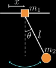
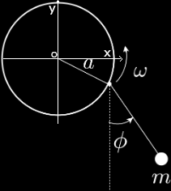
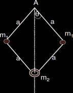

Applications of Lagrangian Mechanics
Problem I. Double pendulum

x1 = l1 sin θ1
x2 = l1 sin θ1 + l2 sin θ2
y1 = −l1 cos θ1
y2 = −l1 cos θ1 − l2 cos θ2
Differentiating the quantities above with respect to time, we obtain the velocities of the bobs:
The Lagrangian of a double pendulum is given by L = T − U, where and are the kinetic T and potential energies U of the system, respectively. The kinetic energy is given by:
where above we used the fact that cos θ1 cos θ2 + sin θ1 sin θ2 = cos (θ1 − θ2).
The potential energy U is given by
U = m1gy1 + m2gy2 = m1gl1 cos θ1 − m2g (l1 cos θ1 + l2 cos θ2) = −(m1 + m2)gl1 cos θ1 − m2gl2cos θ2
The Lagrangian is therefore
Problem II. Oscillations of a pendulum with a freely sliding base
A simple pendulum of mass m2, with a mass m1 at the point of support which can move on a horizontal line lying in the plane in which m2 moves.
Using the coordinate x of m1 and the angle φ between the string and the vertical, we have
x2(t) = x(t) + l sin θ
y2(t) = - l cos θ
We have
U = m2 gy2 = - m2gl cos θ
Problem III. Rotating pendulum
Consider a simple pendulum of mass m whose point of support moves uniformly in a circle of radius a with frequency ω, as shows in the figure. Write down the Lagrangian of the system.
x = a cos ωt + l sin φ
y = -a sin ωt + l φ
and
recalling the identity sin a cos b - cos a sin b = sin (a − b) we can write the last term cos ωt sin φ − sin ωt cos φ = - sin (ωt − φ). So the kinetic energy is
and the potential energy
U = −mgy = −mg(l cos φ − a sin ωt)
Problem IV. Centrifugal governor
The system shown below, is known as centrifugal governor. The particle m2 moves on a vertical axis and the whole system rotates about this axis with a constant angular velocity Ω. The 4 arms are lenght constant. As the system rotates around its axis the masses m1 extends further out from the axis and the m2 is pulled upward.
Solution. We need only one DOF to represent the motion of m2, i.e. θ which varies from the original value represented in the diagram to θ = π/2. Let the point of support A, the origin of the axes, the distance m2 from the origin is
l2 = 2a cos θ
and so
dl2/dθ = -2a sin θ
its velocity is then
dl2/dt = -2a sin θ (dθ/dt)
and
and
U2 = -2mga cos θ
To describe the motion of m1 we need two degrees of freedom θ and φ. As the two masses 2m1 extend further out from the axis the infinitesimal displacement is, from the definition of angle in radians
dl1/a = dθ
so
dl1/dt = dθa/dt
Similarly, for the rotation aroux the axis of the system
dl1,φ/(asinθ) = dφ
so the velocity is
dl1,φ/dt = dφ/dt(asinθ) = Ω a sin θ